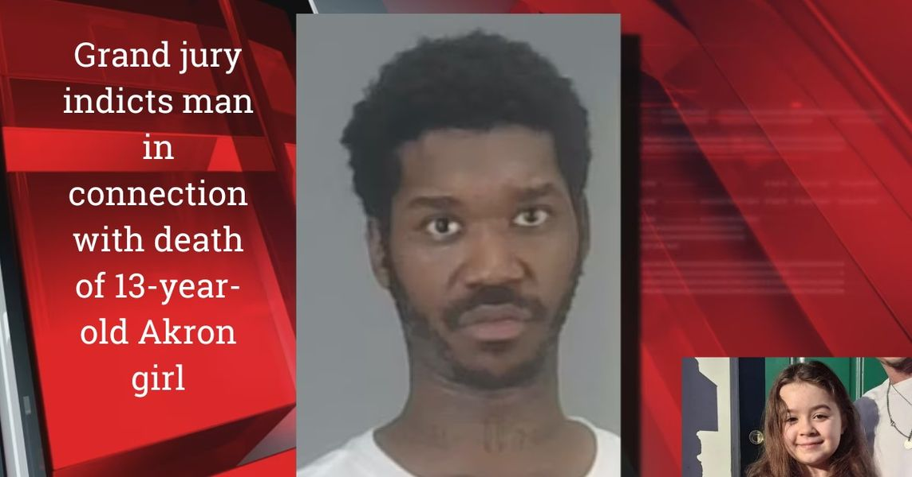

Timeline photos
And today we have to talk about Racism and Classism in the overdose death of 13 year old Melanie Elkins.
Here is a picture of 30 year old Keith Earley who has been indicted by a grand jury on charges of gross abuse of a corpse and failure to report knowledge of a death.
Of course on yesterday's post of mine, people would be happy to see Keith Earley spend the rest of his life in prison or killed or whatever... just so they get their pound of flesh.
There were stories that Keith did terrible things to Melanie. THAT IS NOT TRUE. Yes. It appears that Melanie had been sexually molested. But IT WAS NOT KEITH.
But that doesn't seem to matter in the court of public opinion. Keith didn't report the death of Melanie. That's horrible. Keith is a monster. That's the unspoken narrative. White people need a villian to hate. And Keith fits the bill.
Keith is the perfect villain. He had just gotten out of prison. He was an addict. He was partying with a 13 year old girl (who, by the way, did not look and dress the way she is typically portrayed in the news and how I show her in this picture.)
It's a perfect story for a blood thirsty audience that drinks hateful news like vampires.
"Scary Black man does terrible things to sweet young White girl." It's a story as old as the day we drug Black people over here as slaves. They are a perfect scapegoat villain.
WE MUST REALIZE THE STEREOTYPE TRAP that the American Institution bates us with and that we fall for every single time.
They, the powerful elite, benefit when we stay divided and hateful towards each other. It's perfect if we make Keith Earley the villain here. Say whatever you want about him. String him up. Just as long as you don't wake up and realize who the real villain is.
We live in a country that has abandoned its people in what is becoming the urban killing fields of America.
Keith Earley is not IN ANY WAY being charged in killing Melanie. What he is being charged with is leaving her body in a field. And I assure you he wasn't the only person involved that did this.
When you are homeless and on parole or probation or have outstanding warrants you absolutely cannot call the police. The Ohio Good Samaritan Law does not protect you in this case. You will go to jail... and it's quite possible you will be charged with the murder.
There has been at least one time where a homeless friend of mine has found a body and I had to call the police. They were too afraid to do it.
I am close enough to this case to feel pretty confident I know exactly what happened here.
The police scooped up a couple people involved in this case. They all panicked because they were all around Melanie when she died. And the people who were questioned pinned it all on the guy they didn't know. Keith Earley isn't part of our community. We don't know him. So he's a perfect scapegoat. The community pinned it on the guy that wasn't a friend of the group.
Keith is taking the fall for all of this. He's a perfect fall guy for everyone. The police can show that they got the bad guy. The people in the community get off the hook. And the liberal elites and racist conservatives get to wish hideous, terrible things on some random and suspicious looking Black man. It's perfect for everyone.
Meanwhile, Keith Earley is going back to prison for a very long time. And now there are rumors that he raped a 13 year old girl. WHICH HE DID NOT DO!
But nobody cares about that. "Case closed." Move on to the next story where we can nail a sacrificial lamb to the cross for problems that we all bear the weight and responsibility of.
If you want to blame someone... take 30 seconds and look at yourself and the politicians you elect and the judgemental hate you project. You are part of the collective hive that have made the hell on Earth that is inner city America. Blame yourself if you actually care about the issue. And then figure out what you actually do to make the system better because your prayers and wishes aren't cutting it.